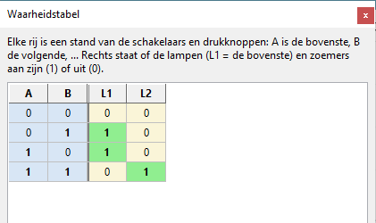

Een waarheidstabel toont voor elke stand van de schakelaars welke lampen branden. Logic maakt
die tabel zelf: het zet de schakelaars en drukknoppen van je paneel één voor één in elke stand en kijkt welke
lampen en zoemers aan gaan.

De waarheidstabel van de halve opteller uit les 26: L1 (de led, som) brandt bij
01 en 10, L2 (de lamp, overdracht) alleen bij 11.
Het venster toont de tabel en volgt je paneel: zet je een onderdeel of draad erbij, haal je er een weg of verplaats je er een, dan rekent Logic de tabel vanzelf opnieuw uit.
Zet een schakelaar om (in de simulatie): de rij met de rode rand is de stand van nu en verspringt mee.
L1, L2 … (lichtgeel) zijn de lampen en leds, ook van boven naar onder; Z1, Z2 … zijn de zoemers, R1 … de relais en schakelrelais.
Een motor (M1 …) toont L (draait linksom), R (rechtsom) of 0 (stil). Een display (D1 …) toont het cijfer dat erop staat; - betekent donker (geen voeding).
De pulsgever, de eindschakelaar en de onderdelen van LogicRun (persoon, wagentje …) doen niet mee: die hangen af van de tijd of van een programma.
Een 1 betekent aan, een 0 uit. Een uitgang die aan is, wordt groen.
Elke rij is één stand. Met 2 schakelaars zijn er 4 rijen, met 3 schakelaars 8 rijen; de tabel kan tot 6 schakelaars (64 rijen).
Met Kopiëren zet je de tabel op het klembord, om ze in een tekstverwerker of rekenblad te plakken.
Na het maken van de tabel staan de schakelaars weer zoals ze stonden.
Let op: een waarheidstabel past bij schakelingen met poorten:
daar hangen de uitgangen alleen af van de stand van de schakelaars nu. Staat er een
flipflop, teller of ander onderdeel met een geheugen op het paneel, dan
hangt de uitgang ook af van wat er vroeger gebeurde. Logic waarschuwt dan, en de tabel geldt niet altijd.
Probeer het
Maak de waarheidstabel van les 4 (EN-poort), les 5 (OF-poort)
en les 26 (halve opteller), en vergelijk ze met de tabellen bij
Verwerking.